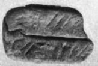
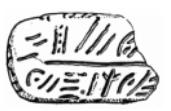

-
PK3
Names
PK3, PK 3
Support
4-sided bar
Location
Palaikastro
Findspot
Unavailable


Scribe
Unavailable
Context
Not Available
Dimensions
Catalogue
Hiraklion Museum
Readings
1 1 0 QE certain
2 1 1 3 certain
3 2 2 JA certain
4 2 3 20 doubtful
4 3 4 30 doubtful
5 3 4 1 doubtful
6 4 5 DA certain
7 4 5 RE certain
8 4 6 70 certain
9 4 6 2 certain
10 5 7 TI certain
10 5 8 2 certain
10 6 9 KU certain
10 6 10 3 certain
10 7 11 3 certain
𐘿
𐄉
𐘱
𐄑𐄒
𐄇
𐘀
𐘙
𐄖
𐄈
𐘠𐄈𐙂𐄉𐄉
QE
3
JA
2030
1
DA
RE
70
2
TI2KU33
𐘿𐄉
𐘱𐄑
𐄒𐄇
𐘀𐘙𐄖𐄈
𐘠𐄈
𐙂𐄉
𐄉
QE3
JA20
301
DARE702
TI2
KU3
3
PK 3
, 4-sided clay bar (Raison-Pope 1994, 273), findspot
unknown, written retrograde
|
side.line
|
statement
|
number
|
|
a.1
|
]-QE
|
3
|
|
a.1
|
JA
|
2
0
|
|
a.2
|
|
]
3
1
|
|
a.2
|
DA-RE
|
72
|
|
b
|
[ ]-TI
|
2
|
|
c
|
[ ]-KU
|
3
|
|
d
|
[ ]
|
3
|
Commentary © John Younger
References